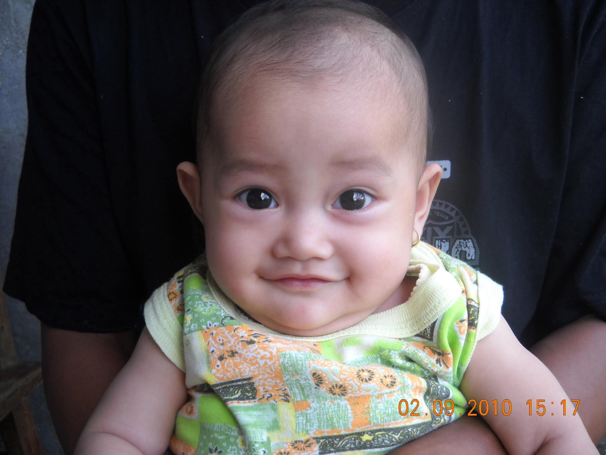
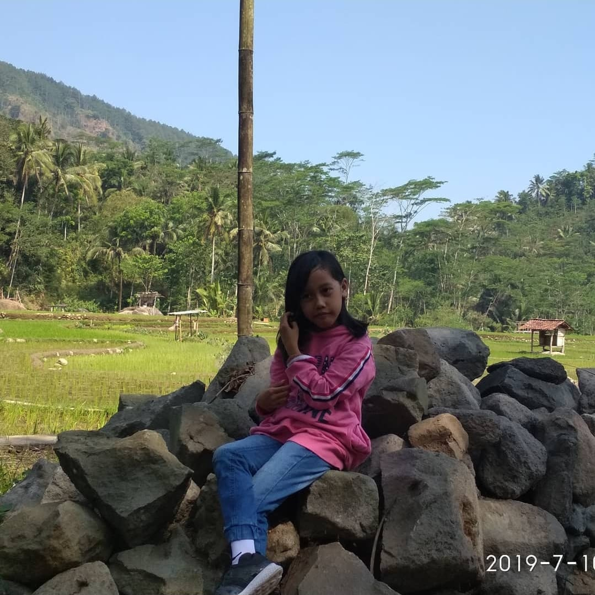
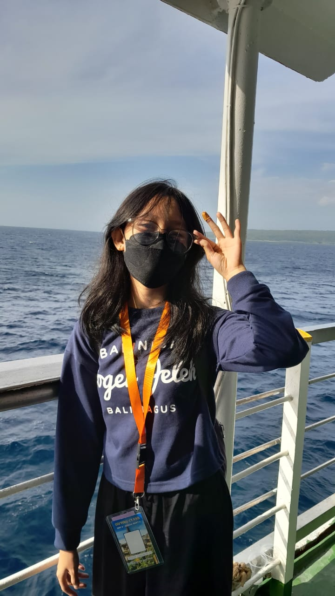
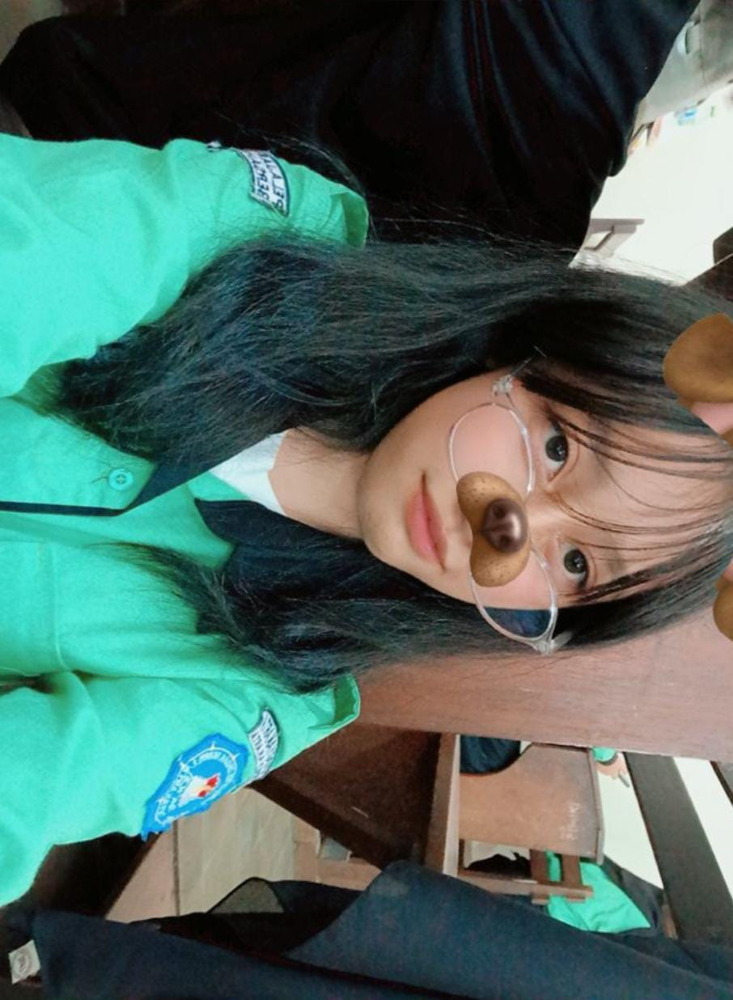

⊹ ࣪ ˖ Hal-Hal Kecil Tentang Diriku﹒⪩⪨﹒

₊⊹ RADITA PURNAMA NINGRUM ˖ ࣪. ࿐♡˚.
Ayo bicarakan tentang saya!
Halo, perkenalkan namaku Radita Purnama Ningrum, tetapi teman-temanku biasa memanggilku Nara.
Aku lahir di Kota Yogyakarta pada tanggal 21 Februari 2010, dan saat ini aku tinggal di Sewon
bersama kedua orang tuaku serta adikku. Aku adalah anak pertama dari dua bersaudara, dan sejak
kecil aku sudah terbiasa menjadi contoh bagi adikku, baik dalam hal belajar maupun bersikap.
Sehari-hari aku bersekolah di SMK Negeri 2 Yogyakarta, mengambil jurusan Sistem Informasi,
Jaringan, dan Aplikasi atau yang biasa disebut SIJA. Aku memilih jurusan ini karena aku
tertarik dengan dunia teknologi dan komputer, serta ingin mempelajari bagaimana sistem
informasi bekerja dan bagaimana cara menciptakan sesuatu yang bermanfaat melalui teknologi.
Selain belajar, aku juga suka mengikuti berbagai kegiatan di sekolah yang bisa menambah
pengalaman dan melatih kemampuan sosialku.
Aku membuat situs web ini sebagai bagian dari proyek mata pelajaran DPK 2, namun lebih dari itu, aku ingin menjadikannya sebagai wadah untuk belajar dan mengembangkan diri. Melalui pembuatan website ini, aku berusaha memahami lebih dalam tentang HTML, desain web, dan cara membuat tampilan yang menarik sekaligus fungsional. Proyek ini juga menjadi sarana untuk mengekspresikan diriku — mulai dari hal-hal yang aku sukai, hobi, hingga momen keseharianku. Aku percaya bahwa setiap proses belajar, sekecil apa pun, akan membawa manfaat besar di masa depan. Karena itu, aku berusaha menikmati setiap langkah dalam perjalanan ini, sambil terus belajar dan berusaha menjadi versi terbaik dari diriku sendiri.
|  | Foto ini diambil ketika aku masih bayi, masa di mana dunia terasa begitu sederhana dan aku belum mengenal apa pun tentang kehidupan. Saat itu, yang aku tahu hanyalah makan, minum, dan menangis untuk menyampaikan apa yang aku rasakan. Aku belum mengerti arti kebahagiaan, kesedihan, atau bahkan arti kasih sayang, meskipun semuanya sudah aku terima sejak lahir melalui perhatian dan cinta dari orang tuaku. Aku tumbuh besar di Purworejo ketika masih kecil, sebuah tempat yang penuh kenangan hangat dan menjadi bagian penting dari perjalanan hidupku. Di sanalah aku mulai mengenal lingkungan sekitar, belajar berjalan, berbicara, dan memahami sedikit demi sedikit tentang dunia di sekitarku. Purworejo menjadi saksi awal pertumbuhanku sebelum akhirnya aku tumbuh menjadi diriku yang sekarang. |
 |
Foto ini diambil ketika aku sudah mulai besar, tepatnya saat aku masih duduk di taman kanak-kanak. Saat itu, aku menghadiri acara wisuda ibuku di UNY, momen yang sangat berkesan dan penuh kebahagiaan bagi keluargaku. Aku masih ingat betapa ramainya suasana waktu itu, dengan banyak orang yang tersenyum dan berpakaian rapi. Aku sendiri mengenakan gaun kecil yang sangat lucu, membuatku merasa seperti ikut menjadi bagian dari acara penting itu. Meskipun aku belum benar-benar mengerti arti wisuda, aku bisa merasakan kebanggaan dan kebahagiaan dari wajah ibuku. Momen itu menjadi salah satu kenangan indah di masa kecilku, ketika aku mulai belajar mengenal arti perjuangan dan kebahagiaan melalui pencapaian orang tuaku. |
|  | Foto ini diambil ketika aku masih duduk di bangku sekolah dasar. Saat itu, aku sedang berada di Karanggedang setelah pulang dari menjenguk nenek buyut bersama tante, juga nenek dan kakek dari pihak ibuku. Hari itu terasa begitu menyenangkan karena kami sekeluarga bisa berkumpul dan menghabiskan waktu bersama di kampung. Aku masih ingat suasana pedesaan yang tenang, udara yang sejuk, dan senyum hangat dari nenek buyut yang sudah lanjut usia namun tetap penuh kasih sayang. Setelah menjenguk, kami sempat berfoto di sekitar lokasi sebagai kenang-kenangan. Foto ini mengingatkanku pada masa kecil yang sederhana dan penuh kehangatan keluarga, saat di mana kebahagiaan terasa begitu mudah ditemukan hanya dengan kebersamaan dan tawa orang-orang yang aku sayangi. |
|  | Foto ini diambil saat aku mengikuti study tour ke Bali ketika masih duduk di bangku SMP. Waktu itu, momen ini terjadi di kapal saat perjalanan pulang dari Bali, setelah beberapa hari penuh pengalaman seru dan tak terlupakan. Aku masih sangat ingat bagaimana angin laut berhembus lembut, suara ombak yang tenang, dan suasana gembira yang terasa di antara kami semua. Di foto itu, aku bersama empat sahabat terbaikku semasa SMP — teman-teman yang selalu membuat hari-hariku penuh tawa, cerita, dan kebersamaan yang hangat. Rasanya kangen sekali mengingat masa-masa itu, ketika kami bisa tertawa tanpa beban dan menikmati setiap momen tanpa memikirkan hal lain. Perjalanan ke Bali bukan hanya sekadar liburan, tapi juga menjadi kenangan berharga yang akan selalu aku simpan sebagai bagian indah dari masa remajaku. |
|  | Foto ini diambil saat aku bersekolah di SMK Negeri 2 Yogyakarta sebagai siswa jurusan SIJA di kelas 10, tepatnya pada masa-masa awal aku masuk sekolah. Dalam foto ini, aku mengenakan seragam TICS — seragam khas yang dipakai setiap hari Selasa. Momen ini terasa begitu spesial karena menandai awal perjalananku di sekolah kejuruan, di mana aku mulai belajar banyak hal baru tentang dunia teknologi dan informasi. Aku masih ingat betapa semangatnya aku menjalani hari-hari pertama, berkenalan dengan teman-teman baru, dan menyesuaikan diri dengan suasana sekolah yang penuh tantangan sekaligus menyenangkan. Foto ini menjadi salah satu yang paling aku sukai, karena setiap kali melihatnya, aku teringat masa-masa penuh semangat di awal perjalanan sebagai siswa kelas 10 di SMK Negeri 2 Yogyakarta. |
{kind=link}
{kind=link}
{kind=link}
{kind=link}
Aku berharap dan berdoa agar suatu hari nanti aku bisa melanjutkan pendidikan ke jenjang yang lebih tinggi di Universitas Airlangga, yang terletak di Kota Surabaya, dengan mengambil jurusan hukum jika aku mampu. Namun, jika belum bisa meraih impian itu, aku tetap berharap bisa menjadi bagian dari keluarga besar Universitas Airlangga dalam cara apa pun. Bagiku, bisa menimba ilmu di sana adalah sebuah kehormatan dan kebanggaan tersendiri, karena itu aku akan terus berusaha dan berdoa agar jalanku menuju cita-cita tersebut dimudahkan.